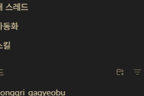
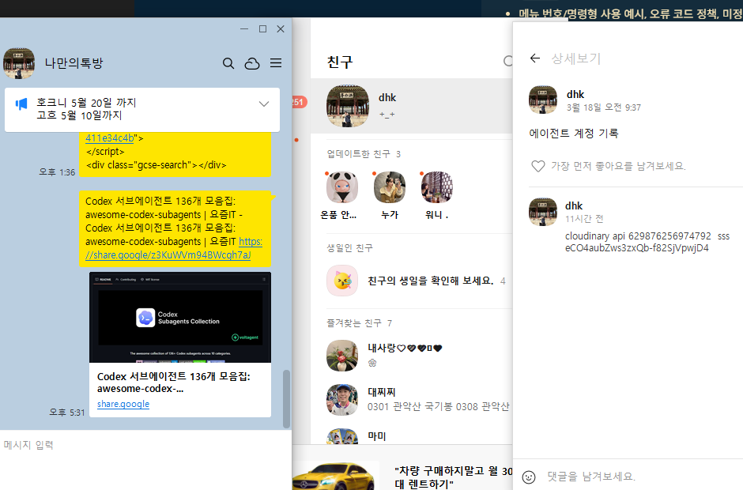

즉시 실행 위젯
자주 쓰는 앱과 폴더를 한 화면에 배치하고 클릭 한 번에 실행합니다.
Quick Launch / INI Compatible
Favorite Widget은 게임 중에도 호출 가능한 경량 위젯입니다. 기존 `favorite-widget.ini`를 그대로 유지하면서, 설정은 WinUI 3 전용 창으로 분리되어 관리됩니다.


아이콘 간격, 라벨 기준선, 버튼 밀도를 정리해 한눈에 정돈된 실행감을 제공합니다.
자주 쓰는 앱과 폴더를 한 화면에 배치하고 클릭 한 번에 실행합니다.
기존 사용자 데이터와 경로를 유지해 마이그레이션 비용을 없앴습니다.
WinUI 3 설정 창에서 목록·폼·명령 버튼을 명확히 분리해 관리합니다.
등록과 실행을 단순화한 3단계 워크플로우입니다.
메인 위젯은 항상 1클릭 실행에 집중하도록 구성합니다.
INI 변경 사항은 위젯에 즉시 반영됩니다.
Win32 위젯을 유지하면서 WinUI 3 설정만 분리합니다.
실제 UI는 240x160 비율 기준으로 밀도를 맞춘 구성입니다.
MSIX 패키지 기반 배포를 준비하면서도 기존 INI 경로는 유지합니다.
`favorite-widget.ini` 경로/키는 그대로 사용합니다.
설정 앱 종료 후 위젯이 변경 사항을 재로드합니다.
docs/wiki/README 동기화와 스크린샷 갱신을 기본 프로세스에 포함합니다.
사용자 질문을 짧고 명확하게 정리했습니다.
네. 설정 앱이 없어도 위젯은 INI를 읽어 정상 동작합니다.
네. INI 포맷과 경로는 변경하지 않습니다.